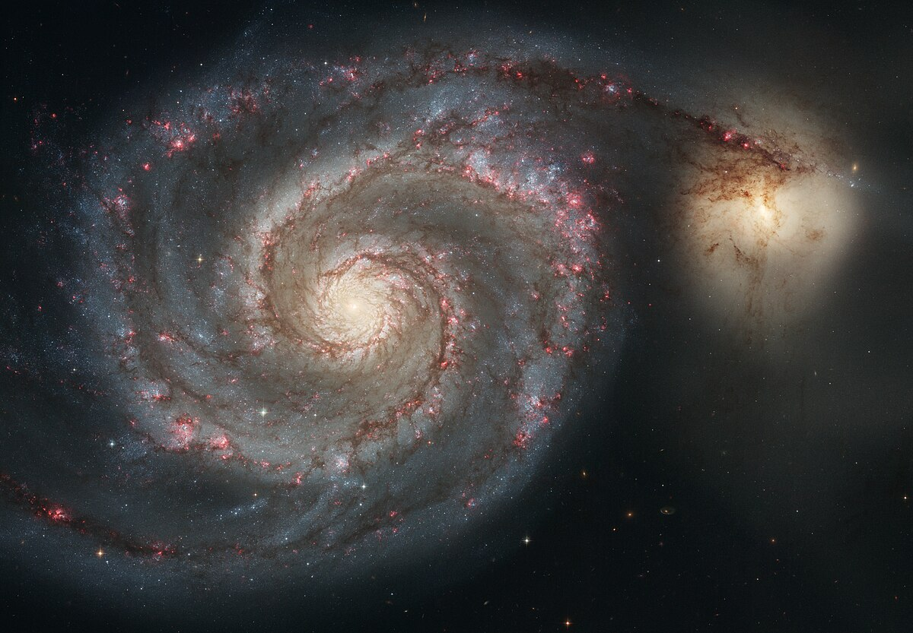

Las galaxias se clasifican principalmente según su morfología en tres categorías principales:
Galaxias Espirales
Caracterizadas por su estructura de disco plano con brazos que se extienden desde un núcleo central, creando un patrón en espiral. Nuestra Vía Láctea es un ejemplo de galaxia espiral.

La galaxia del Remolino (M51), un ejemplo clásico de galaxia espiral
Las galaxias espirales contienen estrellas jóvenes y viejas, con formación estelar activa principalmente en sus brazos. Se subclasifican según la prominencia de su bulbo central y el grado de enrollamiento de sus brazos.
Galaxias Elípticas
Tienen forma elipsoidal o esférica, sin estructura espiral. Contienen principalmente estrellas viejas con poca formación estelar nueva, y varían en tamaño desde enanas hasta gigantes.

M87, una galaxia elíptica gigante en el cúmulo de Virgo
Las galaxias elípticas se forman a menudo como resultado de fusiones galácticas y contienen cantidades significativas de materia oscura. Se clasifican según su grado de elipticidad, desde E0 (casi esféricas) hasta E7 (muy alargadas).
Galaxias Irregulares
No tienen una forma definida. Son generalmente pequeñas y ricas en gas y polvo, con intensa formación estelar. A menudo son el resultado de interacciones gravitacionales entre galaxias.

La Gran Nube de Magallanes, una galaxia irregular satélite de la Vía Láctea
Estas galaxias son laboratorios cósmicos de formación estelar, ya que sus nubes de gas y polvo se comprimen debido a interacciones gravitacionales, desencadenando el nacimiento de nuevas estrellas.